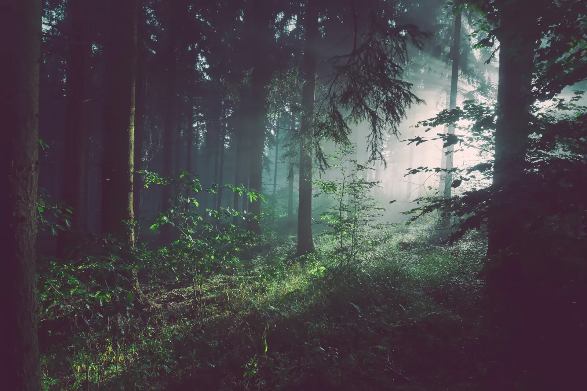

↓ 往下走，發現更多 把世界看近一點
不只是看見動物，更是認識牠們的世界。
一起探索，一起守護一本有生命的圖鑑
今天，想認識誰？
從一個眼神開始，
發現每個生命獨有的故事。
點選照片，翻開牠的故事
每一片土地，都有自己的故事
走進牠們的世界。
從濕潤的樹梢，到遼闊的草原。
跟著動物，重新認識地球。
讓每一種生命，都有明天
保育，從日常開始喜歡牠們，
喜歡牠們，
也留一片家給牠們。
一座完整的森林，是無數生命的家。
你的小小選擇，也能讓野外更美好。
選一件今天做得到的事。
野外的十秒鐘安靜一點，
安靜一點，
生活正在發生。
看看美國國家馬鹿保護區的鏡頭，
捕捉馬鹿親子在水邊的一刻。
跟著好奇心出發你的第一場
你的第一場
森林小旅行。
三站探索，用自己的步調認識自然。
- 01
與森林居民打個招呼
認識小熊貓，發現樹梢上的生活。
- 02
看看不一樣的家
走進棲息地，看看牠們如何生活。
- 03
帶走一個友善的改變
選一個保育行動，讓探索繼續。